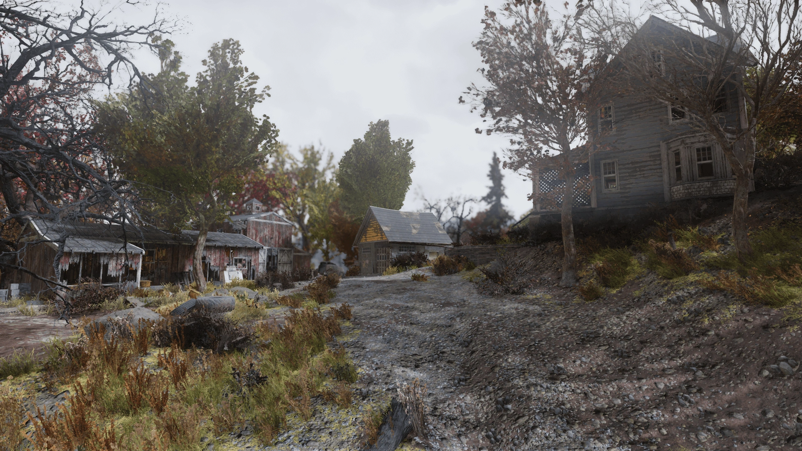
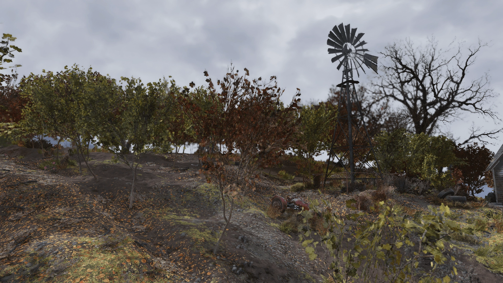
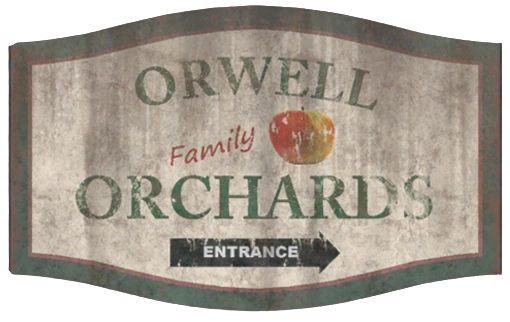
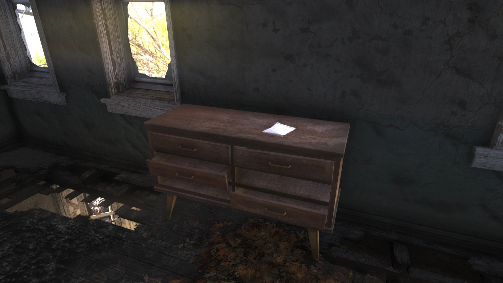
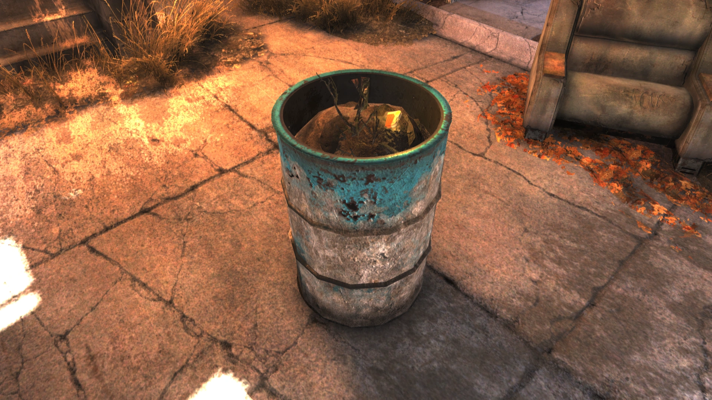
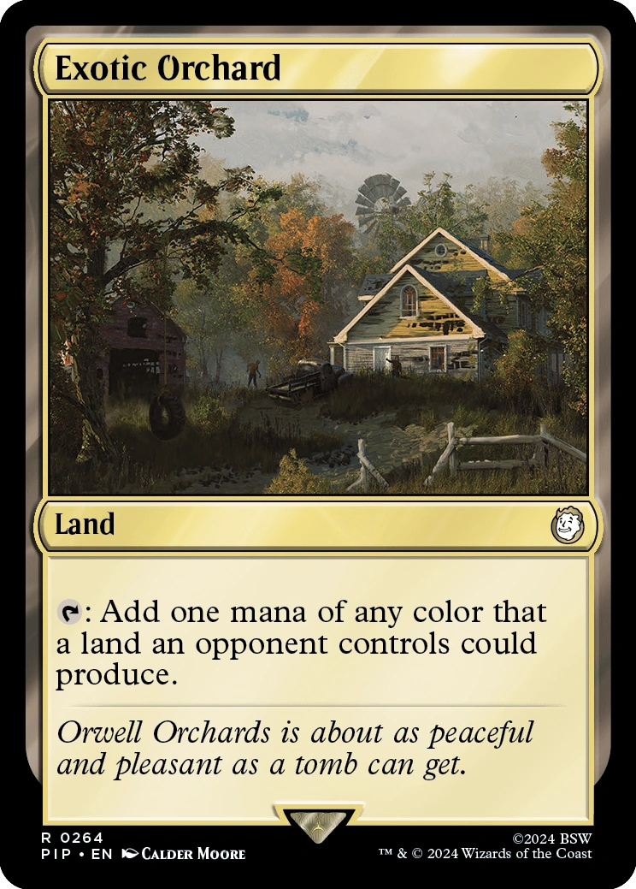
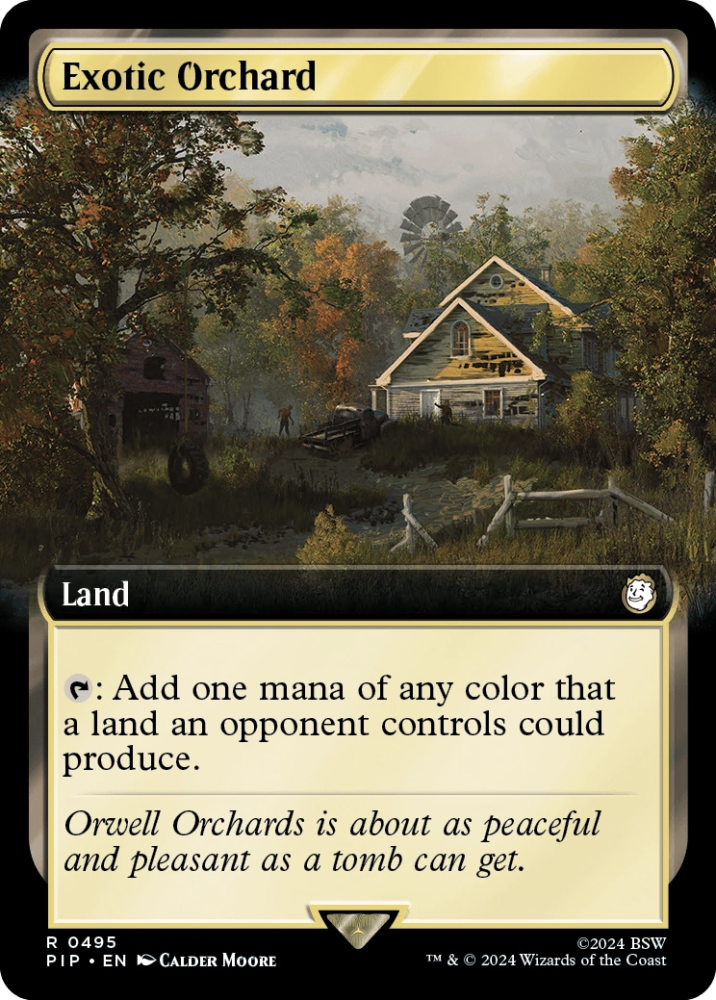

Orwell Orchards
オーウェル果樹園
概要
オーウェル果樹園は、アパラチアの森林地帯にあるロケーションです。
背景
チャールストンを見下ろす丘の上に位置するオーウェル果樹園は、かつて繁栄した農場でしたが、何年も苦しい経営が続き、利益を出すことはほとんどありませんでした。
2077年10月、果樹園は蛾の被害に見舞われ、収穫に打撃を与え、農場は大きな赤字に陥りました。
油罠は効果がなく、殺虫剤を買う資金もなかったため、収穫量は100ブッシェル以下と予測されました。
イアン・オーウェルとシェリル・ベネット=オーウェルは切実に必要なローンを申請しましたが、銀行に断られました。
大戦直前に一見奇跡のような出来事が起きました——オーウェル夫妻がラッキー・ヒッツ宝くじで30万ドルの当選くじを引いたのです。
しかしそれは、より深刻な問題への応急処置に過ぎなかったでしょう。
蛾は問題の一部でしかありませんでした。シェリルに内緒で、イアンは農場を担保にして自宅の地下に広大な核シェルターを建設していたのです。
彼は快適設備に費用を惜しまず、屋内スパ、ミニゴルフコース、ジムなど、地上の生活をできるだけ再現する内装を備えた広大なシェルターを造りました。
しかしその代償として、放射線遮蔽とインフラの品質が犠牲になりました。
シェルターは最初の数ヶ月は順調に機能し、イアンとシェリルに子づくり——果樹園の経営に追われて何年も先送りにしていたこと——に取り組む時間を与えました。
しかし2078年3月になると、イアンの見当違いな優先順位が明らかになり始めました。
放射線がシェルターに漏れ出し、核融合発電機が修理不能なまでに故障し、暖房も故障寸前でした。
オーウェル夫妻はあと数ヶ月持ちこたえることを決め、11月まで持つだけの物資と暇つぶし用の本がありました。
しかしこれは悪い選択でした。イアンは放射線を浴び続け、徐々にグール化が進行しました。
秋になると時間の感覚を失い、髪が抜け落ち、急速に痩せていきました。
彼はシェリルの安全に執着し、外部に助けを求めることを頑なに拒否しました——それはシェルター計画の失敗を認めることに等しかったからです。
最終的にイアンの精神状態は悪化し、シェリルが自分の犠牲を理解していないと結論づけ、何としても彼女を出さないと決意しました。
結局、彼はアパラチアに蔓延する多くのフェラル・グールの一体となり、自分と家族を救うはずだったシェルターに閉じ込められました。
2103年になってようやく彼は脱出し、オーウェル果樹園はフェラル・グールの大群の巣窟となりました。
この巣はキャラバンや旅人を攻撃するほど問題になり、ルイス＆サンズ農業用品店のパトナム家などの地元住民が、到着したばかりのB.O.S.第一遠征軍に対処を嘆願しました。
レイアウト
オーウェル果樹園は、かつてはミスター・ファームハンドの暴走に悩まされていた農場ですが、Steel Dawnの時点ではファームハンドは穏やかになっています。
2階建ての農家、入れないガレージ、2つの納屋があります。
小さい方の納屋の外壁には放射性の樽が積まれています。
建物の片方にアーマー作業台があり、ラッキー・ヒッツ宝くじの録音がゴミと一緒にオイル樽の中にあります。
大きい方の納屋にはティンカー作業台と武器作業台があり、上階にはダッフルバッグと弾薬箱があります。
農家の1階にはソファの上に積まれたコーヒーテーブル、椅子、ロックされた金庫（ピックロック0）があります。
2階には壊れたベッドフレーム、フットロッカー、ロックされた壁金庫（ピックロック0）があります。
ドレッサーの上にシェリルの日記が置かれています。
農家の地下にはシェルターへのドアがあります。
主なアイテム
- シェリルの日記（メモ） — 農家2階のドレッサーの上
- ラッキー・ヒッツ宝くじの録音（ホロテープ） — 放射性の樽に囲まれた倉庫の青い堆肥樽の中
発見できるメモ・ターミナルエントリ
シェリルの日記
場所：農家2階のドレッサーの上
—2077年10月14日—
イアンが今日チャールストンにローンの申請に行ったけど、銀行にまた断られた。これからどうしたらいいか分からない。
今年は厳しくなるかもとは分かっていたけど、外の木から100ブッシェルも収穫できるか怪しい。
あの油罠は蛾の問題には大して効果がなかったし、本格的な援助なしには殺虫剤を買う余裕もない。
どこでそんなお金を調達できるか見当もつかない。
どうなろうと、秋の収穫のほとんどはもう失われてしまった。
イアン・オーウェルのターミナル（シェルター内）
シェリルがこの場所を建てるのにどれだけ借金したか知ったら、俺を殺してただろうな！
でも長い目で見れば正解だったようだ。
彼女は銀行が最後のローンを断ったのは知ってたけど、正確な理由は知らなかった。
今さら銀行が金を取り返しに来るのを見てみたいもんだ！
どのみち果樹園を救う手立てはなかった。もう何年も利益が出てなかったし、蛾の前の話だ。
最悪なのは——爆弾が落ちる直前に宝くじに当たったってこと。
来月に担当者が来るはずだったけど、もう来ないだろうな。残念だ。
当選金はトイレットペーパーの追加にはなったのに。
メリークリスマス……シェルターに避難してから1ヶ月ちょっと経った。
順調にやってる。物資は十分で、設備も問題なく動いてる。
シェリルもこの場所のことを黙ってたことはほぼ許してくれたみたいだ。
今朝、全部がめちゃくちゃになる前に買っておいたベビーベッドでサプライズした。彼女はかなり喜んでた。
見つけなかったのが不思議なくらいだ。子供が欲しいとずっと言ってたけど、果樹園がいつも最優先だった。
まあ、今は時間がたっぷりある。ここに新しい命が生まれたら素敵だろうな。
もう5ヶ月くらいか。赤ちゃんの方はまだできない、努力は足りてないわけじゃないんだが。
上からの放射線が漏れ始めてるんじゃないかと思い始めてる。
物資はまだ少なくとも1年分ある。修理を全部こなすのが大変になってきた。
先週はプールのポンプが壊れ……その数日前に核融合発電機が壊れた。
プロジェクターの1つはダメで、暖房も怪しくなってきた。
修理を続けていれば大丈夫なはずだ。
今は9月のはず、たぶん。何日かは数ヶ月前に分からなくなった。
果樹園の葉が色づき始めてるころだろう。一年で一番好きな季節だった。
ほぼ全部の設備が動かなくなった。最低限のもの——空気、水、食料だけだ。
でも本はたくさんある、それにパッティングの腕前は今までで最高だ。
ここ数ヶ月、体調がよくない。髪が抜け落ちて、体重を維持するのも難しい。
シェリルは、ここが俺を病気にしてるから助けを見つけなきゃって言ってる。
大丈夫だ。まだ出る準備はできてない。
まだ体調悪い。頭がぼんやり。集中できない、タイプも辛い。
でもここなら安全だ。それは確認済みだ。
シェリルには分からないんだ……犠牲を。借金を、何ヶ月もの準備を。
全部彼女のために。彼女と、決して生まれてこない赤ちゃんのために。
彼女は出たがってる。出させるわけにはいかない。出させない……
登場作品
オーウェル果樹園はFallout 76にのみ登場します。
ギャラリー







オーウェル果樹園は、Fallout 76の中でも最も悲痛なストーリーを持つロケーションの一つです。
蛾の被害に苦しむ農場、宝くじ当選の皮肉なタイミング、そして妻に内緒で建てた核シェルター——すべてが悲劇へと収束していきます。
イアンのターミナルエントリは時系列で読むと本当に辛いです。
クリスマスにベビーベッドをサプライズする喜びの記録から、髪が抜け体重が落ちていく恐怖、そして最後の「出させない」という狂気の宣言まで。
グール化していく夫と、逃げられない妻——密室の恐怖がリアルに迫ってきます。
Steel DawnのField Testingクエストでこの場所に来るプレイヤーは、かつてここに住んでいた夫婦の物語を知ると、押し寄せるフェラル・グールを別の目で見ることになるでしょう。
This article was created by translating and editing Orwell Orchards from Nukapedia: The Fallout Wiki.
Licensed under the Creative Commons Attribution-Share Alike License (CC BY-SA 3.0).
コミュニティ維持のため、寄付を受け付けております。
> COMMENTS